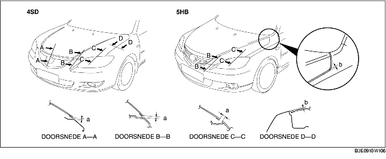

AFSTELLEN MOTORKAP
B3E091056601W02
Afstellen spleetbreedte
1. Verwijder de volgende onderdelen:
-
(1) Richtingaanwijzers opzij (Zie VERWIJDEREN/PLAATSEN RICHTINGAANWIJZER OPZIJ.)
-
(2) Voorbumper (Zie VERWIJDEREN/PLAATSEN VOORBUMPER.)
-
(3) Koplampunits (Zie VERWIJDEREN/PLAATSEN KOPLAMPUNIT.)
-
(4) Voorscherm (Zie VERWIJDEREN/PLAATSEN VOORSCHERM.)
2. Draai de bouten waarmee de motorkap aan de scharnieren bevestigd is los en breng de kap in de juiste positie.
3. Draai de bouten vast.
4. Controleer of de speling tussen de motorkap en de carrosserie binnen de specificaties ligt.
-
Standaard speling
-
a: 0,2-3,8 mm {0,0079-0,14 in}
-
b: -1,0-3,0 mm {-0,039-0,11 in} (4SD)
-
b: -1,5-2,5 mm {-0,059-0,098 in} (5HB)
-
c: -0,5-2,5 mm {-0,019-0,098 in} (4SD)
-
c: -1,0-2,0 mm {-0,039-0,078 in} (5HB)
-
d: 2,5-4,5 mm {0,10-0,17 in}
Afstellen hoogteverschil
1. Stel de hoogte van de motorkap af door de rubber aanslagen te verdraaien.
2. Controleer of het hoogteverschil tussen de motorkap en de carrosserie binnen de specificaties ligt.

-
Standaard speling
-
a: 3,0-6,0 mm {0,12-0,23 in}
-
b: -1,5-0,5 mm {-0,059-0,019 in}
-
c: -1,0-1,0 mm {-0,39-0,39 in}